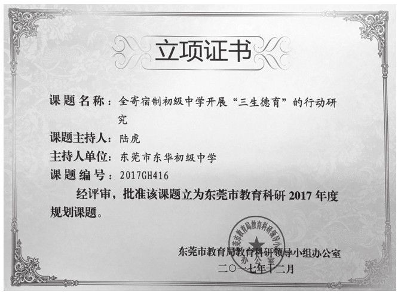

尊敬的各位领导、各位老师、各位同事：
大家上午好！
受学校委托，在此我就新学期学校的德育工作谈谈几点设想，敬请大家批评指正。我发言的题目是《科学引领，规范管理，加强德育“四化”建设》。
今年7月，教育部基础教育质量检测中心发布了《中国义务教育质量检测报告》。这是我国首份国家义务教育质量检测报告，对我国义务教育阶段学生德智体美劳和学校教育教学等状况做出了客观呈现，并对如何进一步提升义务教育质量提出了建议。报告显示，当前学生整体价值取向积极，具有良好的行为规范；家长普遍关注孩子学习状况，亲子沟通和教育方式有待改进；对于班主任的喜欢程度随着学段的升高呈下降趋势；对于法律知识、心理健康教育需求、社会关系需求与认同等有较高的需求度；对于班主任、德育老师的教育方式和教育水平有较高的期待和要求……
据学校调研发现，该报告所反映出来的情况，与我校学生发展状况、学校德育现状高度吻合。参照《质量检查报告》的建议，根据董事长的“心中有祖国、眼中有目标、肩上有责任、身上有正气”的“四有”育人目标，结合我校发展的实际以及德育现状，本学期学校德育工作将围绕“德育队伍专业化、德育课程系列化、德育科研精品化、德育评价多元化”的“四化建设”展开工作，力争做到“让每一个学生都做个好人，让每一个学生都喜欢东华”。
一、德育队伍专业化，提升德育实效
德国著名哲学家和教育家赫尔巴特有一句名言：“教育的唯一工作与全部工作都可以总结在这一概念之中——德育。”德育工作向专业化发展，是时代发展的趋势与要求。随着我校一校两区、六个年级的格局建设完成，我们现在是一艘拥有6个年级、35个级组、323个教学班级、近两万名在校学生的“超级教育航母”。拥有一支专业化的德育队伍，将是提升我校德育品质的根本途径。
1.加强德育干部队伍建设。拥有一支特别能战斗、特别能吃苦的德育干部队伍，是我校教育教学成功的法宝之一。随着我校办学规模的扩大，德育干部队伍吸纳了不少新鲜的血液，为了让老干部再次爆发热情、实现人生的二次超越，让新干部迅速进入角色、实现管理艺术的快速提升，我们将充分依托东华初中成长学院，开展管理艺术沙龙研讨、德育经验分享会等，加强德育干部的培训力度。
2.加强班主任队伍建设。俗话说，一个好校长是一所好学校。同样，在家长眼里，一个好的班主任就代表着一所好学校。一名优秀的班主任，必将成为学生成长道路上的灯塔、明灯、榜样、导师。本学期，初一初二年级要继续发挥德育工作坊的实效作用，同时充分利用班级管理研究会，研究班级管理的难点，寻找班主任工作的着力点，提升班主任的育人艺术和管理能力。同时，要充分发挥名班主任、名班主任工作室的辐射作用和引领作用，带一批新人、成就一批名师。
3.完善生活管理部的服务与育人功能。本学期，学校继续壮大了生活管理部的管理力量。队伍的壮大也意味着要不断思考、提升、拓展生活管理部的育人和服务功能。对新初一学生住宿生活的重点指导，对初二学生青春情绪的重点疏导，对初三学生生活情感、饮食起居的重点关爱，以及对学生喜怒哀乐的关注，对学生情感情绪的疏导，对学生纪律卫生的管理，切实做到“面慈、心善、行美、言和、教严”，提升育人品质。
4.加强德育小组、团委学生会、少先队的育人功能。德育小组在发挥校园管理中执法功能的同时，要进一步体现提醒、引导、警示、教育的作用，确保学生生活有序、行动安全的同时，彰显育人功效。团委学生会、少先大队要充分发挥优秀学生群体组织的优势，培训、引导学生干部、优秀学生代表等自我管理、自主管理、协助管理，锻炼学生能力，树立优秀榜样，通过团课教育学生，通过入团宣誓激励学生，通过团徽的榜样作用引领学生。
二、德育课程系列化，拓宽德育途径
针对学生的成长规律、遵循教育的发展规律，德育课程将围绕“放、规、收”的基本原则展开，拓宽育人渠道。
初一年级，德育课程围绕一个“放”字，百花齐放，让每一个学生喜欢东华、适应东华、融入东华。初一年级要开发学生喜闻乐见的德育课程，以学生社团为载体，开展丰富多彩的校园文体活动，让校园活起来。同时，围绕礼仪教育、习惯养成、传统文化教育、孝道文化教育，多线贯穿，全面育人。
初二年级，德育课程围绕一个“规”字，规范习惯，让每一个学生的习惯养成内化为自己的精神内核，行为自觉、行动自律、内心自省。初二年级要开发精品化的德育课程，以磨炼学生意志、强化学习与生活习惯、激发学生内驱力为目的，让校园动起来。同时，围绕团队拓展、生活体验、生活互助、社会实践等教育主题，引导学生发现生活、发现社会、发现自己。
初三年级，德育课程围绕一个“收”字，积蓄力量，让每一个学生对人生、对未来充满动力、充满阳光、充满斗志、充满希望。初三年级要开发主题化的德育课程，以激发学生斗志与决心、疏导学生学习压力、扬起理想风帆为目的，让校园暖起来。同时，围绕职业规划、人生理想、感恩励志等教育主题，培养学生的吃苦精神、拼搏精神、抗挫能力、自我调适能力。
充分发挥学校学生心理健康教育与家庭教育指导中心的育人功能。指导中心要以“心育”为教育主线，通过班主任心理健康教育能力培训、危机干预能力提升，通过生活老师、德育老师的谈话技巧与学生异常心理干预能力的培训，提升德育队伍的心育能力；通过心理普查、定时抽查、问卷调查等形式，充分了解学生心理状况，通过个别辅导、心理大课、常规心理课程的开设，提升学生的心理调适能力，通过心理委员与心理观察员培训，提升学生异常心理的自我调适能力和反馈速度、拓宽反馈救助渠道、丰富心育队伍、确保学生安全。同时，指导中心要充分利用家长大课堂、家庭教育讲座、东华家校心育微信公众平台、心理特刊等媒介，加强对家庭教育的指导，提高家长家教水平，推进家庭亲子关系向美向好。
充分发挥家长委员会的纽带作用和社会教育功能。利用学校“一松两减”“绿色周末”的契机，充分调动家长委员会的积极作用，引导学生走近社会、走进实践，体验劳动、体验生活，将德育的触角延伸至社会，让社会德育成为学校德育、家庭德育的重要补充，拓宽学生视野，提升学生实践能力。充分发挥家长委员会的纽带作用，拓宽家校联系的渠道，搭建家校互通的平台，推动家校关系的共融共情、共享共生。
三、德育科研精品化，升华德育品质
现代教育管理理念中，科研兴校、以研究促提升已经是一种共识。随着时代发展，学校德育也越来越面临诸多新问题和新挑战。研究新问题方能解决新问题，《寄宿制初级中学开展“三生德育”的行动研究》课题获东莞市基础教育科研“十三五”规划立项。此项课题正在两个校区稳步推进研究工作，课题研究成果也必定能为我校的德育工作带来实效，也欢迎老师们踊跃参与德育课题的研究工作，研究问题，也研究自己，研究自己的工作实践。
加强德育微课的资源整合与评比。微时代的浪潮、碎片化的时代，如何让德育更具实效性？德育微课将会为我们的学校德育提供一个平台和途径。本学期，我们将加大德育微课资源的开发，围绕叙事德育、生活德育两大主题，建设强大的德育资源库，为学校德育工作提供帮助。

作者主持的德育立项课题
四、德育评价多元化，唤醒德育主体
俗话说，多一把评价尺子，多一批优秀学生。学校提出的“多元评价”理念，围绕“让每一个学生都找到成就感”为目标，尊重生命、尊重个性、尊重发展。德育的本质就是爱与激励，德育评价更要大踏步走向多元。
本学期，各年级、各级组、各班级要充分践行“十星三优”的评价办法，天天有表扬、周周有奖励、月月有表彰、人人有奖领。进一步优化班级管理评价制度，充分合理的利用班级德育量化表格，激励与鞭策同在，奖惩与关爱共存。年级要完善月德育主题评价，根据学生发展的阶段性特点，开展文明礼仪之星、乐善好施之星、行为规范标兵、东华小孝星、勤奋上进之星、东华好学生等主题评选，充分发挥榜样的激励和引领作用，引爆学生内心的小宇宙，成为更好的自己。
老师们，同事们，有人说，德育工作无过便是功。这只说对了一方面。“无过便是功”指的是在学生安全方面，来不得半点儿闪失和过错。但作为育德育心的工作，我们还需要在学生的心灵深处植入善良、友爱、上进、乐观、豁达、感恩、责任以及诸多对学生身心发展和个人价值提升有益的积极因子。
王守仁《传习录》有云：种树者必培其根，种德者必养其心。他告诉我们：栽种树木一定要在根部培土，树立美德一定要加强内心的修养。今天我们教育学生，美德的树立，优秀品质的形成，绝非一朝一夕之功，须从根本上着力培养，以心为原点，以心育心，以爱育爱。无论时代如何发展，教育思想如何变革，用心育人，善育人心，是育人的根本，我们仍将努力！